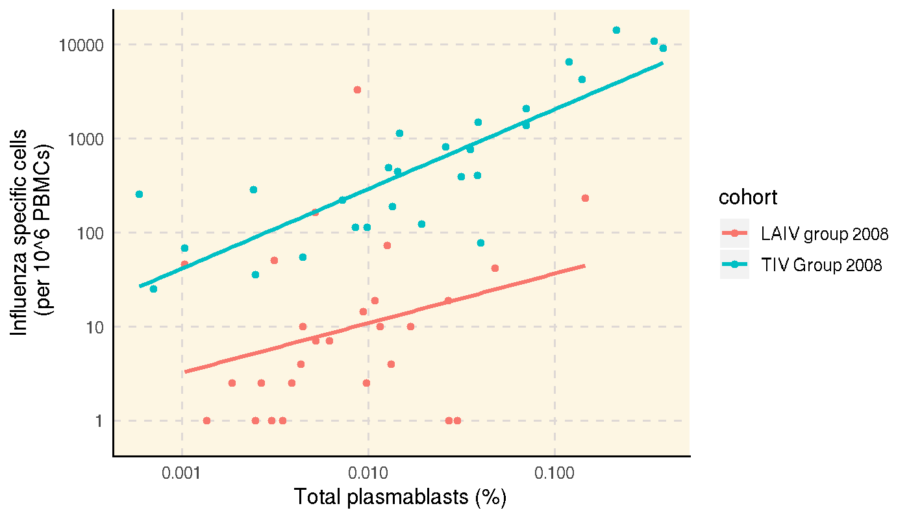
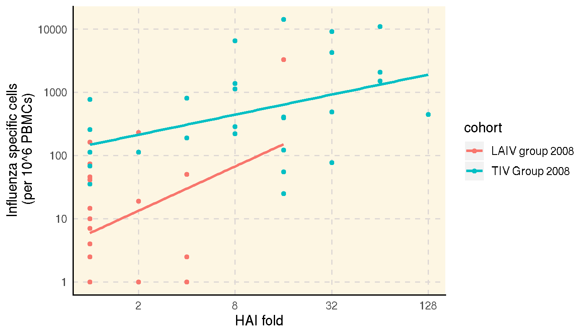

vignettes/report_SDY269.Rmd
report_SDY269.RmdImmuneSpaceR code produces consistent results, regardless of whether it is being executed from a module or UI based report on the server or on a local machine. This vignette reproduces a report available on the ImmuneSpace portal using the same code.
This report investigate the association between the number influenza-specific cells measured by ELISPOT measured at day 7 with the number of plasmablast measured by flow cytometry and day 7 and the HAI response measured at day 28 (log-fold day28/day0). It basically reproduces Figure 1 d-e) of Nakaya et al. (2011) published as part of the original study.
study <- CreateConnection("SDY269")
dt_hai <- study$getDataset("hai", reload = TRUE)
dt_fcs <- study$getDataset("fcs_analyzed_result", reload = TRUE)
dt_elispot <- study$getDataset("elispot", reload = TRUE)# Compute max fold change for HAI, and remove time zero
dt_hai <- dt_hai[, hai_response := value_preferred / value_preferred[study_time_collected == 0],
by = "virus,cohort,participant_id"][study_time_collected == 28]
dt_hai <- dt_hai[, list(hai_response = max(hai_response)), by = "cohort,participant_id"]
# Define variable for ELISPOT, keep only the IgG class
dt_elispot <- dt_elispot[, elispot_response := spot_number_reported + 1][study_time_collected == 7 & analyte == "IgG"]
# Compute % plasmablasts
dt_fcs <- dt_fcs[, fcs_response := (as.double(population_cell_number) + 1) /
as.double(base_parent_population)][study_time_collected == 7]# Let's key the different datasets
setkeyv(dt_hai, c("participant_id"))
setkeyv(dt_fcs, c("participant_id"))
setkeyv(dt_elispot, c("participant_id"))
dt_all <- dt_hai[dt_fcs, nomatch = 0][dt_elispot, nomatch = 0]The figure below shows the absolute number of plasmablast cells measured by flow cytometry vs. the number of frequency of influenza-specific cells measured by ELISPOT.
ggplot(dt_all, aes(x = as.double(fcs_response), y = elispot_response, color = cohort)) +
geom_point() +
scale_y_log10() +
scale_x_log10() +
geom_smooth(method="lm") +
xlab("Total plasmablasts (%)") +
ylab("Influenza specific cells\n (per 10^6 PBMCs)") +
theme_IS()
The figure below shows the HAI fold increase over baseline vs. the number of frequency of influenza-specific cells measured by ELISPOT.
ggplot(dt_all, aes(x = as.double(hai_response), y = elispot_response, color = cohort)) +
geom_point() +
scale_x_continuous(trans = "log2") +
scale_y_log10() +
geom_smooth(method = "lm") +
xlab("HAI fold") +
ylab("Influenza specific cells\n (per 10^6 PBMCs)") +
theme_IS()
In each case, we observe good correlations between the different responses, at least for the TIV cohort.